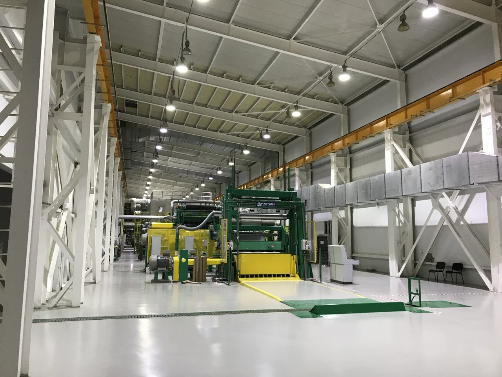
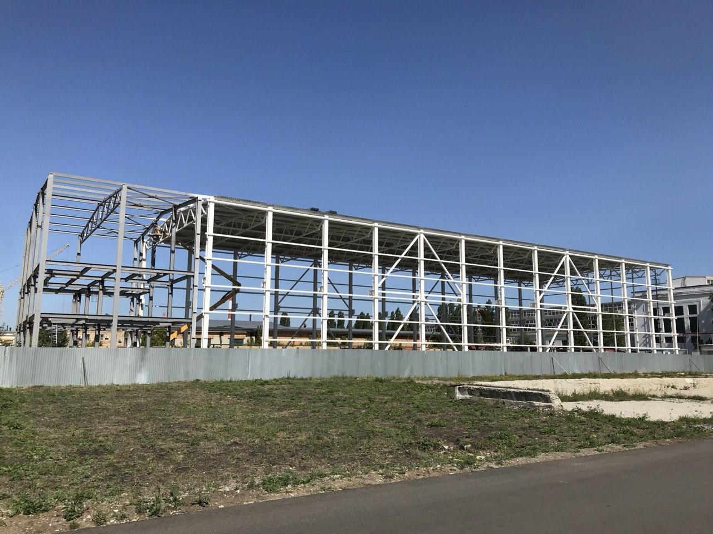
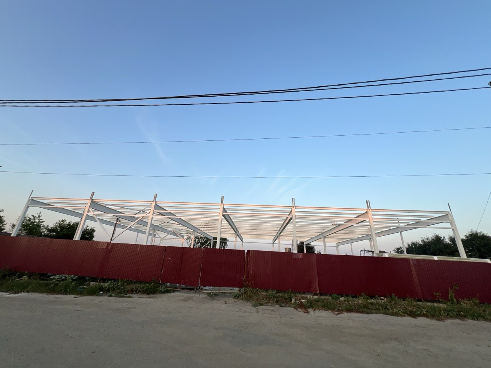
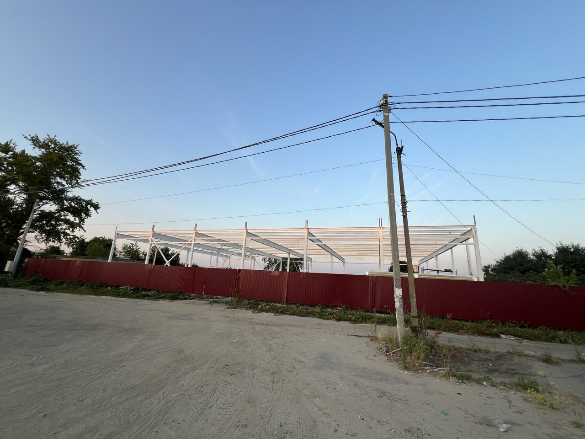
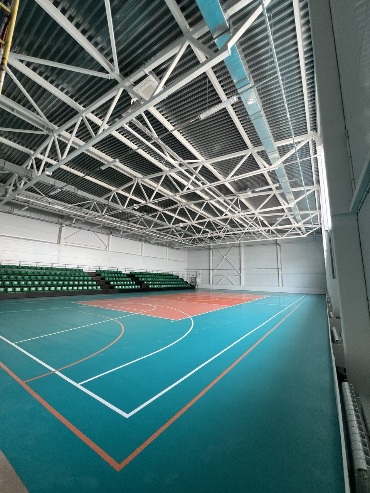

Орбита-П / Пенза и область
Фотографии конструкций, рабочих зон и производственных помещений из материалов «Орбита-П».
Обсудить задачу по телефону ↗






На фотографиях можно увидеть разные условия: открытый каркас, колонны внутри производственного помещения, подготовленные зоны и внешнюю территорию здания. При обсуждении вашего объекта полезны такие же общие виды и отдельные снимки узлов.
Для металлического каркаса начните со страницы огнезащиты металлоконструкций. Если основная сложность связана с режимом эксплуатации склада или производства, посмотрите соответствующий раздел объектов.
Расскажите о конструкциях, площади и сроках.